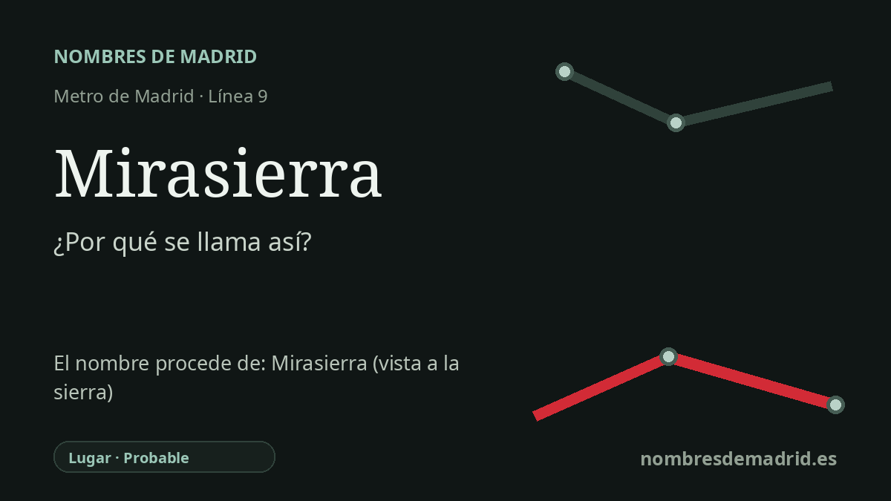

Publicado el · Investigación de Nombres de Madrid · Cómo verificamos cada origen · 6 fuentes consultadas
Respuesta rápida
La estación de Mirasierra recibe el nombre del barrio madrileño al que da servicio. El topónimo es descriptivo y suele entenderse como 'mira la sierra' o 'vista a la sierra', en alusión a la Sierra de Guadarrama visible desde esta zona elevada del norte de Madrid.
La historia del nombre
La estación de Mirasierra toma su nombre del barrio de Mirasierra, en el distrito de Fuencarral-El Pardo. Para quien viaja en Metro, el nombre funciona ante todo como referencia local: identifica esta zona residencial del norte de Madrid servida por la línea 9 en torno a la avenida del Ventisquero de la Condesa.
La palabra es transparente en español. Leída literalmente, Mirasierra sugiere 'mira la sierra' o 'vista a la sierra'. Las fuentes locales secundarias explican el nombre del barrio por el paisaje montañoso que se contempla desde sus zonas altas, especialmente la Sierra de Guadarrama al noroeste de Madrid.
El lugar histórico que está detrás de la estación es la Colonia Mirasierra. Madrid Film Office, con información de la Fundación Arquitectura COAM, sitúa su origen en un proyecto de 1927 de la Sociedad de Casas Baratas para una extensa ciudad satélite de viviendas unifamiliares de una planta organizadas en torno a plazas circulares. Esa idea inicial de colonia-jardín es la raíz urbana del nombre.
La colonia no quedó fijada en aquella primera forma. Un plan de vivienda de 1954 introdujo la construcción en altura, estableció la ubicación definitiva de las zonas verdes y reguló las condiciones de ocupación de las parcelas; desde los años sesenta, la urbanización creció con vivienda colectiva en el perímetro y vivienda unifamiliar en el interior. Calles como La Masó y Nuria, el conjunto parroquial de Nuestra Señora de las Nieves, y después comercios, colegios, hospitales y equipamientos deportivos fueron convirtiendo la colonia en barrio.
La estación de Metro es mucho más reciente que el topónimo. La nota de inauguración del Ayuntamiento de Madrid documenta que Mirasierra abrió el 28 de marzo de 2011, al prolongarse la línea 9 en 1,5 kilómetros desde Herrera Oria y dotar al barrio de una nueva conexión rápida. Por tanto, el origen directo del nombre de la estación está bien acreditado; la intención exacta del nombre original del barrio es probable, aunque no consta un acta oficial de denominación que la formule expresamente.